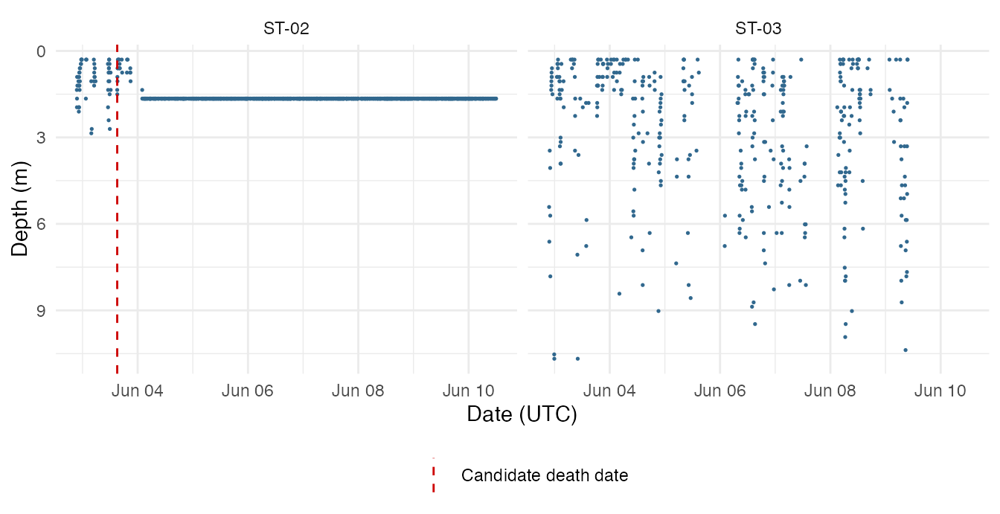
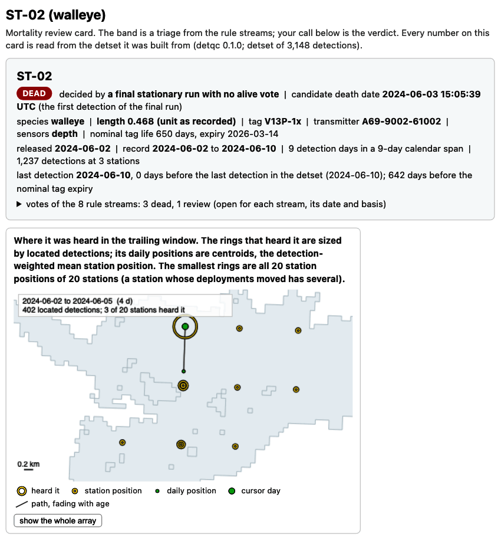
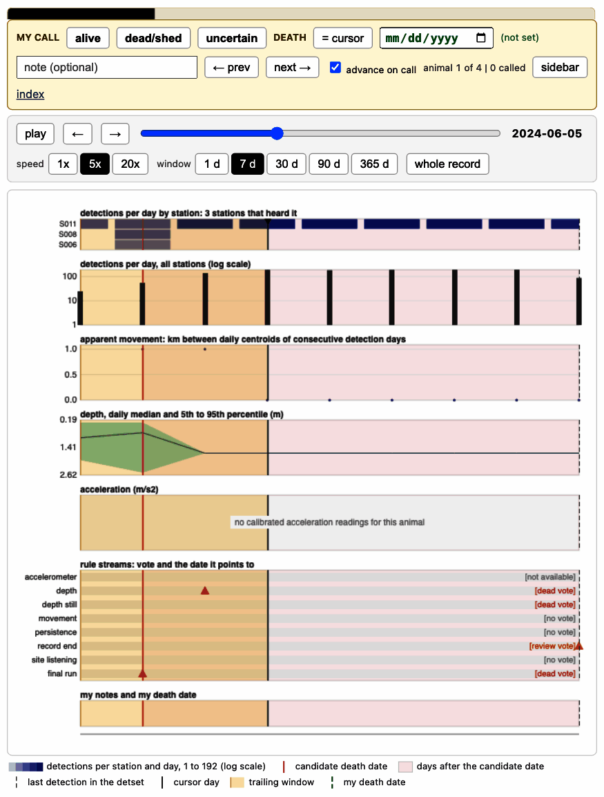

Mortality filtering: base algorithm and review cards
Source:vignettes/mortality-review.Rmd
mortality-review.RmdA tag that stops moving can belong to a dead animal, a shed tag or an immobile animal. Detections alone cannot always separate the three, so in detqc rules flag the candidates and you make each call. This page runs a mortality detection algorithm to flag potential mortality states, writes review cards that open in your browser, stores your calls in the detection set, and removes and logs the detections after each mortality or shedding date.
Cards and calls go to out_dir, set below to a temporary
folder; point it at a folder beside your data.
# Change to a folder beside your data, such as "C:/telemetry/2024/processed".
out_dir <- tempdir()The example
The example is example_mortality, included with the
package: the Stoney Lake study of Get started,
already read, calibrated and filtered, with the simulated fate of each
animal. ST-02 and ST-03 carry depth sensors, and one of the four dies
part-way through. Use your own filtered set in its place. The rules read
which receivers listened on each day, so audit_listening()
runs first. With your own data, audit before the filters, as Get started does. Every
receiver of this array worked, so the code names them all in
known_listening.
library(detqc)
# Build the detection set from the included study, depth already in metres
detections <- example_mortality$detections
deployments <- example_mortality$deployments
animals <- example_mortality$animals
dets <- detset(detections, deployments, animals)
# Record which receivers listened; every receiver here worked
dets <- audit_listening(dets,
known_listening = unique(dets$deployments$receiver_serial))
# Print the prepared set
dets
#> <detset> 3,148 detections of 4 animals (4 transmitters), heard on 14 of 20
#> receivers at 14 of 20 stations
#> 2024-06-02 to 2024-06-10 (UTC); 20 deployments; 4 animal rows; 180 of 180
#> receiver-days listening (audited)
#> log: 2 steps (detset, audit_listening)Step 1. Flag: sort the animals into mortality bands
detect_mortality() sorts every detected animal into one
of three bands for you to review on a card. No detection is removed
until you call an animal dead.
The bands come from rule streams. A stream is one rule that tests one
kind of evidence in each animal’s record: the final-run stream asks
whether the last days of detections fall at one site, and the depth
stream asks whether the depth reading stops changing. Each stream votes
dead, alive or review for each animal, or gives no vote. The deciding
streams set the band; an evidence stream, such as the depth stream,
shows its vote on the card and does not move the band. A site is a group
of stations within sites_km (1 km by default) of each
other, so two receivers that hear one dead tag count as one place.
- dead: a stream found death evidence, such as a final run of detections at one site, and no stream found the animal alive after it.
- review: the evidence is mixed, or the rules cannot see enough: a death vote beside an alive vote, a final run near one site, a sparse record, or a record that ends near the end of tag life or of the data with no earlier death evidence.
- alive: no death evidence, on a record that ended well before tag life and the end of the data.
An animal heard to the end of the study is never in the alive band: the rules cannot see what happened after its last detection.
# Band the animals with the default streams
detect_mortality(dets)
#> <mortality_bands> 4 animals in 20 sites of at most 1 km; streams:
#> accel_flatline, terminal_run, depth_flatline, record_end, site_listening,
#> movement_resumption, persistence
#> dead 0 of 4 animals
#> review 4 of 4 animals (sparse_record 4)
#> alive 0 of 4 animals
#> sensor streams: 2 rows; 0 accelerometers voted (0 dead, 0 alive)
#> The bands are a triage. The call made on the review cards is the verdict.Every animal is in review as a sparse record.
mortality_rules() lists the streams with their settings,
which suit studies of months; the final-run stream needs 14 detection
days.
# Print the default streams and their settings
mortality_rules()
#> <mortality_rules> 7 streams, run in this order:
#> accel_flatline vote accel_flat = 0.1; min_flat_days = 14;
#> active_within_days = 30; min_readings = 1;
#> min_active_days = 1
#> terminal_run vote min_days = 14; min_calendar_days = 14;
#> near_factor = 2; stray_days = 2
#> depth_flatline evidence depth_flat = 0.3; depth_flat_share = 0.1;
#> min_flat_days = 14; min_readings = 1
#> record_end censor within_days = 30
#> site_listening vote within_days = 30; listening_share = 0
#> movement_resumption vote ref_days = 3; min_days_away = 2
#> persistence rank window_days = 30; lag_days = 7; coverage =
#> 0.95; min_record_days = 45; min_pairs = 20;
#> min_window_days = 10; review_at = 0.95terminal_run votes dead when the last days of detections
fall at one site, and accel_flatline and
depth_flatline look for a sensor that stops changing to the
end of the record. movement_resumption votes alive when the
animal is heard away from that site later, record_end votes
review on a record that ends near the tag’s life or the end of the data,
site_listening counts the days the last site’s receivers
listened after the last detection, and persistence scores
how little the core stations change, which orders the review band. A
stream votes “unavailable” for an animal it cannot judge, such as one
with no sensor of its kind.
The settings below scale the streams to this nine-day study; a setting given by name applies to every stream that has it. Shorter settings flag more animals. Set them from what your species does: a three-day rest at one station is common in some species and rare in others.
# Scale the streams to nine days: a final run of 3 detection days and
# 3 calendar days, 2 flat sensor days, a record end within 2 days
mort_rules <- mortality_rules(min_days = 3, min_calendar_days = 3,
min_flat_days = 2, within_days = 2)detect_mortality() with these rules gives each animal
its band and candidate death date.
# Band the animals with the scaled streams
bands <- detect_mortality(dets, rules = mort_rules)
bands
#> <mortality_bands> 4 animals in 20 sites of at most 1 km; streams:
#> accel_flatline, terminal_run, depth_flatline, record_end, site_listening,
#> movement_resumption, persistence
#> dead 1 of 4 animals (terminal_run 1)
#> review 3 of 4 animals (record_end 2; terminal_run_stray 1)
#> alive 0 of 4 animals
#> sensor streams: 2 rows; 0 accelerometers voted (0 dead, 0 alive)
#> The bands are a triage. The call made on the review cards is the verdict.
# Show each animal's band, deciding rule, candidate date and depth vote
bands$bands[, c("animal_id", "band", "deciding_rule", "death_date",
"depth_flatline_vote", "record_end_vote")]
#> animal_id band deciding_rule death_date
#> 1 ST-02 dead terminal_run 2024-06-03 15:05:39
#> 2 ST-01 review terminal_run_stray 2024-06-08 00:32:54
#> 3 ST-03 review record_end <NA>
#> 4 ST-04 review record_end <NA>
#> depth_flatline_vote record_end_vote
#> 1 dead review
#> 2 unavailable review
#> 3 none review
#> 4 unavailable reviewST-02 is in the dead band. Its candidate death date, 15:05 UTC on 3
June, is the first detection of its final run at one site; the death may
be later, because an animal may hold station alive before it dies. The
simulation that made these files killed ST-02 at 02:00 UTC on 4 June,
part-way into that run, and the sensor record on the card is what you
use to set the date. The depth stream votes dead as well: ST-02’s depth
is flat on its last seven days, from 4 June. ST-01 stays in review
because its final days fall at one site apart from stray detections on a
few days (terminal_run_stray). ST-03 and ST-04 are in
review because their records end within two days of the end of the data
(record_end). record_end votes review for
ST-02 as well; its death evidence starts before that window, so it stays
in the dead band.
The depth record shows when it died (Figure 1).
# Take ST-02's band row, with its candidate death date
st02 <- bands$bands[bands$bands$animal_id == "ST-02", ]
# Keep the detections that carry a depth reading
depth <- dets$detections[!is.na(dets$detections$sensor_value), ]
# Plot depth against time, one panel per animal, the candidate date on ST-02
ggplot2::ggplot(depth, ggplot2::aes(datetime, sensor_value)) +
ggplot2::geom_point(shape = 16, size = 0.6, colour = "#31688E") +
ggplot2::geom_vline(data = data.frame(animal_id = "ST-02",
candidate = st02$death_date),
ggplot2::aes(xintercept = candidate,
colour = "Candidate death date"),
linetype = 2) +
ggplot2::scale_colour_manual(name = NULL, values = c("Candidate death date" = "red3")) +
ggplot2::facet_wrap(~animal_id, ncol = 2) +
ggplot2::scale_y_reverse() +
ggplot2::labs(x = "Date (UTC)", y = "Depth (m)") +
theme_positionr() +
ggplot2::theme(legend.position = "bottom")
Figure 1. Calibrated depth of the two walleye with depth sensors (1,237 readings for ST-02 and 418 for ST-03). ST-02’s depth still changes after its candidate death date, 15:05 UTC on 3 June, and holds at 1.7 m from 02:00 UTC on 4 June, the simulated death.
depth_flatline votes dead on the flat end of ST-02’s
record. ST-03 moves up and down through the water to its last reading,
and the stream gives it no vote.
Assigning a rule of your own
mortality_rule() adds an evidence stream. The one below
reads the calibrated depth readings and votes dead when the last 48
hours of an animal’s readings vary by less than 0.1 m. With
kind = "evidence", as here, it shows on the cards beside
the other streams and never decides a band; a stream made with
kind = "vote" decides. ?mortality_rule lists
the tables a stream receives.
# Define a stream: dead when the last 48 h of depth vary by under 0.1 m
depth_still <- mortality_rule("depth_still", function(data, settings) {
# Keep the depth readings; last_hours() keeps an animal's last hours
depth_readings <- data$readings[data$readings$class == "depth", ]
last_hours <- function(readings) {
readings[readings$datetime >= max(readings$datetime) -
settings$hours * 3600, ]
}
# Vote once per animal from the spread of its last hours of depth
vote_one <- function(animal_readings) {
sd_m <- stats::sd(last_hours(animal_readings)$value)
data.frame(animal_id = animal_readings$animal_id[1],
vote = if (sd_m < settings$sd_m) "dead" else "none",
detail = sprintf("depth SD %.2f m over the last %d h", sd_m,
settings$hours))
}
votes <- lapply(split(depth_readings, depth_readings$animal_id), vote_one)
do.call(rbind, votes)
}, kind = "evidence", settings = list(hours = 48, sd_m = 0.1), label = "depth still")Added to the rule set, the stream votes beside the others.
# Add the stream to the rule set and band the animals again
mort_rules$depth_still <- depth_still
bands <- detect_mortality(dets, rules = mort_rules)
bands$bands[, c("animal_id", "band", "depth_still_vote")]
#> animal_id band depth_still_vote
#> 1 ST-02 dead dead
#> 2 ST-01 review unavailable
#> 3 ST-03 review none
#> 4 ST-04 review unavailableStep 2. Open the review cards
review_mortality() writes one card per animal in the
dead and review bands and an index of every animal, then opens the index
in your browser; all = TRUE writes a card for the alive
band too. The four
review cards of the Get started page show a dead animal and three in
review. The cards are plain HTML files, so a co-author who does not use
R can read them. An sf polygon of the water body, passed in
control, is drawn under the card map; here it is made from
the depth raster of Stoney Lake.
# Make the lake outline for the card maps from the depth raster
lake <- terra::rast(system.file("extdata", "stoney_depth.tif",
package = "detqc"))
outline <- sf::st_as_sf(terra::as.polygons(terra::ifel(is.na(lake), NA, 1)))
# Write the cards and the index, and open the index in a session
review_dir <- file.path(out_dir, "mortality_review")
dets <- review_mortality(dets, review_dir, bands = bands, open = interactive(),
control = list(outline = outline))
dets$cards[, c("animal_id", "band", "bytes", "checked")]
#> animal_id band bytes checked
#> 1 ST-02 dead 85538 TRUE
#> 2 ST-01 review 85749 TRUE
#> 3 ST-03 review 85538 TRUE
#> 4 ST-04 review 85576 TRUEThe detection set lists the cards in dets$cards;
checked = TRUE means the numbers on the card matched the
detection set. build_mortality_cards() writes the cards;
call it yourself to write them without opening a browser, or for one
band only:
# Write cards for the dead band only, without opening a browser
dead_only <- build_mortality_cards(dets, bands,
file.path(out_dir, "dead_cards"),
which = "dead",
control = list(outline = outline))
dead_only$cards[, c("animal_id", "band", "checked")]
#> animal_id band checked
#> 1 ST-02 dead TRUE
Figure 2. Top of the review card of ST-02, with the cursor on 5 June 2024.

Figure 3. Lower part of the same card. From 4 June the tag is heard every day at S011, the centroid stops moving, and the depth is flat.
How to read a card:
- Start with the time panels (Figure 3), below the map. A dead animal or a shed tag gives a record that changes from many stations to the same one or two, every day, with no movement after and, on a depth tag, no change in depth.
- A card opens with its cursor on the first day of the record. Move the cursor with the slider or the arrow keys (Shift and an arrow moves 7 days; Home and End go to the first and the last day). The map shows the window that ends at the cursor (Figure 2). Space plays the record.
- Widen the browser window if the table beside the map is cut off.
- Make the call with the buttons or the keys: A alive, D dead or shed, U uncertain. D takes the candidate death date. For another date, move the cursor to the day and press X, or type the date.
- Write a note when the call is not obvious. N and P move to the next and previous animal.
- On the index, Export my calls (CSV) downloads every call, date and note as one file.
The browser that made the calls stores them until you export them. Export before you close the browser or change computers. Import calls (CSV) restores them.
Step 3. Decide: bring your calls back
In your study, the file comes from the export button of the index,
named such as mortality_calls_2024-06-12.csv. Here a block
of code stands in for the reviewer and writes a file in the same layout:
ST-02 dead or shed at 02:00 UTC on 4 June, dated from the depth record
where it went flat, later than its candidate date of 15:05 UTC on 3
June; and the other three alive. With your own data, skip the block and
use your exported file.
# Write one row per animal: ST-02 dead or shed at 02:00 UTC on 4 June, the
# rest alive, with the candidate date the card showed
calls <- bands$bands[, c("animal_id", "band")]
calls$call <- ifelse(calls$animal_id == "ST-02", "dead_or_shed", "alive")
calls$candidate_date <- format(as.Date(bands$bands$death_date))
calls$candidate_date[is.na(calls$candidate_date)] <- ""
calls$death_date <- ifelse(calls$call == "dead_or_shed", "2024-06-04", "")
calls$death_time <- ifelse(calls$call == "dead_or_shed", "2024-06-04 02:00:00",
"")
calls$date_source <- ifelse(calls$call == "dead_or_shed", "typed", "")
calls$note <- ifelse(calls$call == "dead_or_shed",
"depth flat from 4 June; one station", "")
# Write the calls file, as the index would export it
calls_file <- file.path(out_dir, "mortality_calls.csv")
write.csv(calls, calls_file, row.names = FALSE)
calls[, c("animal_id", "call", "death_date", "death_time", "date_source")]
#> animal_id call death_date death_time date_source
#> 1 ST-02 dead_or_shed 2024-06-04 2024-06-04 02:00:00 typed
#> 2 ST-01 alive
#> 3 ST-03 alive
#> 4 ST-04 aliveapply_mortality_calls() reads the file and stores each
call in the detection set.
# Store the calls in the detection set
dets <- apply_mortality_calls(dets, calls_file)
dets$mortality[, c("animal_id", "call", "death_date", "death_time", "date_source")]
#> animal_id call death_date death_time date_source
#> 1 ST-01 alive <NA> <NA> <NA>
#> 2 ST-02 dead_or_shed 2024-06-04 2024-06-04 02:00:00 typed
#> 3 ST-03 alive <NA> <NA> <NA>
#> 4 ST-04 alive <NA> <NA> <NA>The simulation that made the example files records each animal’s fate, and the calls agree with it:
# Print the simulated fate of each animal
example_mortality$fates
#> animal_id fate death_datetime
#> 1 ST-01 alive <NA>
#> 2 ST-02 dead 2024-06-04 02:00:00
#> 3 ST-03 alive <NA>
#> 4 ST-04 alive <NA>filter_mortality() removes each dead or shed animal’s
detections from margin_days days before its death, 7 by
default, to remove any behaviour leading up to death. A call with a
death time cuts at that time less the margin; a call with a date only
cuts by whole UTC days. Alive and uncertain animals keep every
detection.
This study is nine days long and ST-02 died 34.5 h after release, so the default margin would remove its whole record. The code counts what each margin removes.
# Count detections removed with margins of 7 days (the default) and 1 day
sapply(c(margin_7_days = 7, margin_1_day = 1), function(days) {
cut <- filter_mortality(dets, margin_days = days)
nrow(dets$detections) - nrow(cut$detections)
})
#> margin_7_days margin_1_day
#> 1237 1210The cut below uses a margin of 1 day.
# Remove ST-02's detections from 1 day before its death time
dets <- filter_mortality(dets, margin_days = 1)
tail(detset_log(dets)[, c("step", "rows_before", "rows_after", "removed")], 2)
#> step rows_before rows_after removed
#> 5 apply_mortality_calls 3148 3148 0
#> 6 filter_mortality 3148 1938 1210The cut removed 1,210 detections of ST-02, every one after 02:00 UTC
on 3 June. The set now holds 1,938 detections. The log records the calls
file. processing_report(dets, file, bands = bands) adds the
bands and the calls to the report, as in the processing report of
the Get started page. The report does not link to the cards, so keep the
review folder beside it.
When new data arrive
reconcile_mortality() lists the calls that new data put
in question, such as an animal called alive that is now in the dead
band, or one called dead and heard away from where it died
(?reconcile_mortality lists every case). It changes no
call; you make the new ones on the cards. Add the new detections, build
the detection set again, apply the same calls file and run
detect_mortality() before it.
Below, a second download stands in for new data: three detections of ST-02 at S014 on 9 June, five days after its death date. A predator that ate the tag and swam off would leave such a record.
# Make three detections of ST-02 at S014 on 9 June
new_dets <- detections[rep(which(detections$animal_id == "ST-02")[1], 3), ]
new_dets$datetime <- as.POSIXct("2024-06-09 10:00:00", tz = "UTC") +
c(0, 150, 290)
new_dets$receiver_serial <- "R014"
new_dets$station_id <- "S014"
# Rebuild the detection set with the new detections
dets_new <- detset(rbind(detections, new_dets), deployments, animals)The same calls file applies to the rebuilt set, and
reconcile_mortality() compares the calls with the new
bands.
# Apply the same calls, band again, and list the calls the new data question
dets_new <- apply_mortality_calls(dets_new, calls_file)
dets_new <- reconcile_mortality(dets_new,
detect_mortality(dets_new, rules = mort_rules))
dets_new$reconcile[, c("animal_id", "call", "band", "needs_review",
"reason")]
#> animal_id call band needs_review reason
#> 1 ST-02 dead_or_shed review TRUE moved after the death date
#> 2 ST-01 alive review FALSE <NA>
#> 3 ST-03 alive review FALSE <NA>
#> 4 ST-04 alive review FALSE <NA>ST-02 is listed as moved after the death date; the other three calls
stand. Open its card again with review_mortality(), decide
whether the new detections are the animal’s, and export the new
call.
Next
- Export the dataset and generate a summary report: hand the set to the glatos and actel R packages, the ATO tables or the detfield R package, the positioning component of positionR.
- Position fish from a cleaned detection set, in detfield, positions the same study.
The code of this page is also a plain R script:
system.file("scripts", "mortality-review.R", package = "detqc");
set out_dir and the calls file to your own before you run
it.